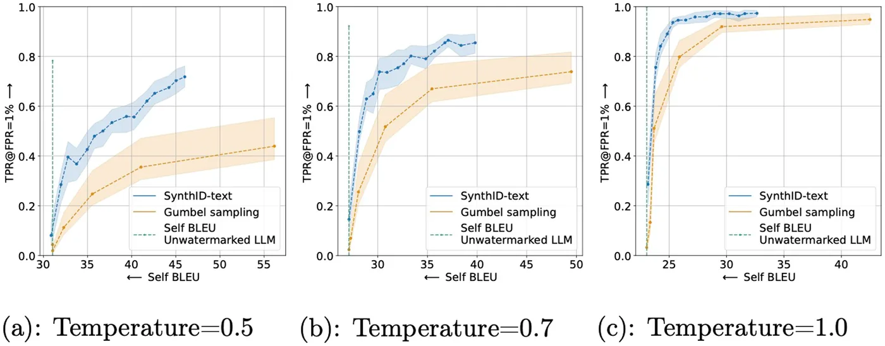

In short
SynthID-Text is a DeepMind method for watermarking text generated by an LLM, so that a piece of text can later be attributed to the model without needing the model itself, a stored log of past outputs, or a separately trained classifier.
It works by changing how the next token is chosen, not what the model computes. At each generation step, several candidate tokens compete in a small tournament refereed by pseudorandom functions seeded from a secret key; the winner becomes the output token. Detection just recomputes the same referees on a candidate text and checks whether the tokens chosen score suspiciously well.
Tuned one way, the scheme provably reproduces the model's original per-token output distribution on average, at no cost to that token's quality; tuned another way, it trades some quality for stronger detectability. A production deployment inside Gemini, evaluated over nearly 20 million real user responses, found no measurable difference in how often people liked the answers.
Contents
01The problem
Large language models now write text that reads as fluently as a person's, at a volume no reader can screen by hand. Once a chatbot response, a homework answer or a news article could have come from either a human or a model, attributing it becomes a practical problem for education, publishing and the health of the wider information ecosystem — and, some of the papers this one cites argue, for the models themselves, since training a future model on a web increasingly full of unlabelled machine output risks feeding a model's own text back into itself.
Three families of approach exist. Retrieval-based detection keeps a growing record of everything a model has ever generated and checks new text against it for matches — workable in principle, but it requires broad coordination between providers and means storing and searching a log of essentially every LLM interaction, which is its own privacy problem. Post hoc detection instead trains a classifier, or measures statistical features of the text, to guess human versus machine after the fact, needing no cooperation from whoever generated it. But such classifiers are expensive to run at scale, perform poorly on text unlike anything in their training data, are documented to be more likely to misclassify text from non-native English speakers, and have to be continually retrained as models improve and the stylistic gap between human and machine writing narrows.
Watermarking is the third option: mark the text at the moment it's generated, so it carries evidence of its origin built in. That marking can happen three ways — editing already-generated text (swapping in synonyms or inserting special-purpose Unicode characters) or training the model to react to specific trigger phrases (useful for catching unauthorized use of a particular model, but not for identifying its output more generally), both of which can leave noticeable artefacts in the text; or generative watermarking: quietly biasing the token-sampling step itself as the text is produced, so no post-processing and no retraining of the model is required.
SynthID-Text, introduced in this paper, is a generative watermark built for a specific constraint that earlier academic schemes weren't tested against: running inside a production system serving millions of real users, where any hit to response quality or added latency shows up immediately. It does not touch how the model is trained — it modifies only the sampling procedure — and detecting the watermark later needs no access to the model at all, which matters because production LLMs are frequently proprietary and expensive to run.
02The core idea
An LLM generates text one token at a time (a token is typically a word or word-fragment): at each step it computes a probability distribution over its vocabulary and a token is sampled from that distribution, then appended to the growing text before the process repeats. A generative watermark doesn't change what the model computes — it changes which token gets sampled from that same distribution, in a way that's invisible to a reader but recoverable later by anyone holding the secret key used to bias the choice.
A generative watermarking scheme typically comprises three pieces working together, a framing this paper adopts from earlier work: a random seed generator that turns the recent context and a secret key into a pseudorandom seed at each step; a sampling algorithm that uses that seed to steer which token is chosen; and a scoring function that, given a finished piece of text and the key, recomputes the same seeds and measures whether the tokens that were chosen look suspiciously non-random — the watermarking evidence.
SynthID-Text's contribution is a new sampling algorithm for the middle piece, called Tournament sampling: it oversamples several candidate tokens from the model's real distribution and runs them through a knockout tournament, refereed by a sequence of pseudorandom functions keyed to the seed. The token that wins the tournament is what actually gets generated. Because the candidates are drawn from the model's own distribution and ties are broken at random, the scheme can be configured so that, averaged over all possible seeds, the token it outputs has exactly the same distribution as the unwatermarked model — costing nothing in that token's quality — or configured to lean harder on the tournament for a stronger, more detectable signal at some cost to quality. That dial, built into the sampling step itself rather than bolted on afterward, combined with a scoring function cheap enough to run without the model, is what the paper argues makes generative watermarking viable at production scale.
03How it works
The mechanics break into the same three pieces named above. Figure 1 shows how they slot into an ordinary generation loop.
![Two-part diagram. Top: ordinary LLM text generation as a simple loop — preceding text feeds the LLM, which produces a probability distribution, a token is sampled from it and appended, and the loop repeats. Bottom: generative watermarking adds a watermarking key and random seed generator feeding a sampling algorithm that produces the output token (the same loop as the top panel, now steered by the seed), plus a separate scoring function that takes the finished text and the key and outputs a score, which is thresholded into a watermarked/not-watermarked decision.](../assets/images/synthid-text-watermarking/fig-p02-fig-1.webp)
Turning context into a seed
At each step t, the random seed generator needs a seed rₜ that's reproducible later from the text alone. SynthID-Text uses a sliding-window generator: hash the last H tokens of context together with the secret key. In the paper's experiments H = 4, so the seed depends only on the four tokens immediately before the one being generated, plus the key. Anyone who has the key can recompute the exact same seed later, from the finished text, without needing the model that generated it.
Scoring every candidate word: g-values
Given a seed, the scheme needs a way to grade any candidate token as good or bad for the watermark. SynthID-Text uses m independent pseudorandom “referee” functions g₁, …, gₘ, each of which takes a candidate token and the seed and returns a g-value — in the paper's main experiments, simply 0 or 1, drawn from a Bernoulli(0.5) distribution (a coin flip, but a reproducible pseudorandom one keyed to the token, the referee number and the seed, not an actual random draw). Figure 2 (top) shows this for a four-word toy vocabulary: each of the three referees assigns every word a 0 or a 1.
The tournament
Tournament sampling first draws a batch of Nᵐ candidate tokens from the model's real probability distribution (repeats allowed — a high-probability token can appear many times). These are split into groups of N and, in round 1, referee g₁ picks the highest-scoring candidate from each group (ties broken at random); the survivors are regrouped and round 2 uses g₂; this continues for m rounds until a single token remains, which becomes the output token. Figure 2 (bottom) walks through the case N = 2, m = 3: eight candidates (2³ of them) enter, and three knockout rounds — refereed by g₁, then g₂, then g₃ — leave “mango” as the winner. (At the paper's experimental setting of m = 30, drawing 2³⁰ candidates up front the way this description implies isn't practical; the paper notes that a more efficient vectorized implementation exists for at least some cases, without spelling out the mechanics in the main text.)
![Two-part diagram illustrating Tournament sampling with a toy four-word vocabulary (mango, lychee, papaya, durian). Top: the random seed generator combines a watermarking key and recent context into a random seed — the highlighted context box reads ‘tropical fruit is’, continuing the preceding words ‘… my favourite’; three random watermarking functions g1, g2, g3 assign 0/1 scores to each vocabulary word. Bottom: eight candidate tokens sampled from the model's distribution are paired up; g1 picks a winner from each pair (with ties), the four winners are paired and g2 picks two winners, and those two compete under g3 for the single final winner, ‘mango’, which becomes the output token.](../assets/images/synthid-text-watermarking/fig-p03-fig-2.webp)
Two knobs: quality versus detectability
Two hyperparameters set where a deployment sits on the quality/detectability trade-off. N, the number of competitors per match, is the sharper one: with exactly two competitors per match (N = 2, the binary knockout shown in Figure 2), the paper proves the scheme is single-token non-distortionary — averaged over all possible seeds, the distribution of that one token is identical to the model's own unwatermarked distribution. That guarantee is about a single token, though; the paper is explicit that non-distortion comes in graded levels, and even its strongest practical setting (described below) admits some cost elsewhere. With more than two competitors per match, the tournament leans harder toward whichever candidate has the best g-value, which the paper calls the distortionary configuration: stronger detection, but the paper proves the output distribution is skewed, not merely at risk of it. m, the number of tournament rounds, controls how much evidence accumulates per token — more rounds mean more watermarking signal, but each successive round draws on entropy the earlier rounds have already partly used up, so returns diminish; the paper's main experiments use m = 30.
Both knobs run up against the same underlying limit: how much freedom the model actually has at a given step. If the model's distribution is nearly certain — low entropy, meaning it would return almost the exact same response regardless of which candidate gets sampled — there's little room for a tournament among alternatives to matter, and the watermark weakens. The paper notes that larger, more capable models tend to run at lower entropy, and that reinforcement learning from human feedback (RLHF) can push entropy down further (sometimes called “mode collapse”); neither point is framed as a concern in the paper itself, but taken together they suggest a tension for the method's future — if the trend continues, newer models could be systematically harder to watermark.
Detecting it later
Keeping longer responses safe: repeated context masking
Because the seed depends only on the last H = 4 tokens, the exact same context window can recur within one response — more likely the longer the response runs, or in text that repeats itself — which would apply the identical bias twice and, other researchers have shown, can visibly distort the text, for example nudging it into a repetition loop. The fix, repeated context masking — an existing technique (Hu et al.5) skipping the watermark on any step whose context window has been used before — is what SynthID-Text builds on. Its own contribution is generalizing this to K-sequence repeated context masking: hold that history across the last K responses, rather than reset it at the start of each new one (the paper's experiments mostly use K = 1, i.e. history reset per response), together with a proof of what that buys. With masking applied, the non-distortion guarantee upgrades from a single token to a whole sequence: the probability of generating any particular full response is, on average over seeds, the same with or without the watermark.
Fitting into a production decoding pipeline
Large deployments rarely sample tokens one at a time from the full-size model — they use speculative sampling3, where a small, fast “draft” model proposes several tokens ahead, and the large target model checks and accepts or rejects them in a single pass, to cut latency. Combining that with watermarking is, to the authors' knowledge, not something prior work had worked out. The paper proposes two schemes: high-detectability watermarked speculative sampling, which keeps the watermark's full strength but can reduce how much the speculative step actually speeds things up, and fast watermarked speculative sampling, which — provided the watermark is single-token non-distortionary — keeps speculative sampling's full speed benefit at some cost to detectability, offset with the learned Bayesian scoring function described above. The fast variant is the one aimed at latency-sensitive production traffic.
04What the results show
Quality: does watermarking change what users get?
The paper's largest test is a live experiment inside the actual Gemini production system (Gemini was previously called Bard): a random slice of real user queries was routed to a watermarked model, an equal-sized slice to the unwatermarked model, and the study measured the same thumbs-up/thumbs-down feedback ordinary users give, as a share of all such feedback received. Across roughly 20 million responses, the thumbs-up rate differed by 0.01% (higher for the watermarked model) and the thumbs-down rate by 0.02% (lower for the watermarked model) — both well inside the 95% confidence interval, i.e. statistically indistinguishable. The authors describe this as, to their knowledge, the first systematic watermarking evaluation of its kind run inside a large-scale production system.
A smaller, reproducible companion study asked human raters to compare 3,000 watermarked-versus-unwatermarked response pairs — Gemma 7B-IT answering ELI5 questions (a dataset of everyday questions paired with plain-English, explain-it-simply answers) — side by side on five axes. None showed a statistically significant preference either way:
| Quality aspect | Prefer watermarked | Prefer unwatermarked | Tie: high quality | Tie: low quality | A:B ratio (excl. ties) | Trinomial test p |
|---|---|---|---|---|---|---|
| Grammaticality / coherence | 369 | 328 | 2089 | 214 | 52.9% [49.2, 56.7] | 0.12 |
| Relevance | 358 | 325 | 1931 | 386 | 52.4% [48.6, 56.1] | 0.21 |
| Correctness | 450 | 460 | 1677 | 413 | 49.5% [46.3, 52.8] | 0.75 |
| Helpfulness | 793 | 751 | 1011 | 445 | 51.4% [48.8, 53.9] | 0.29 |
| Overall quality | 859 | 805 | 887 | 449 | 51.6% [49.2, 54.1] | 0.19 |
Reproduced from Extended Data Table 1 of the source PDF. "A:B ratio" is the share of non-tied comparisons that preferred the watermarked response, with a bootstrapped 95% confidence interval; the trinomial test's p-value tests whether watermarked and unwatermarked responses were preferred equally often, counting ties as a third outcome.
Automated checks — perplexity (a measure of how "surprised" a model is by a piece of text, lower roughly tracking with more fluent text) and standard capability benchmarks — turned up no significant difference either, though the paper defers the details to its supplementary material rather than reporting numbers in the main text.
Detectability: does it actually work better than prior methods?
The headline comparison is against what the authors describe as the best-performing prior scheme in each category, by their own selection criteria (detailed in supplementary material this page didn't review): Gumbel sampling2 for non-distortionary watermarking, a method that seeds its own next-token choice from the same kind of pseudorandom hash used here; and Soft Red List1 for distortionary, which instead biases the model's raw token probabilities toward a pseudorandomly chosen subset of the vocabulary before sampling. Figure 3 is the central result.
![Three-panel results figure. Panel a: detectability (true positive rate at 1% false positive rate) versus number of tokens. SynthID-Text (orange) rises from about 0.2 at 50 tokens to about 0.87 at 400; Gumbel sampling (blue) rises from about 0.18 to about 0.74 over the same range, with the gap between the two narrowest at 50 tokens. Panel b: abstention rate versus number of tokens for watermarked (blue) and unwatermarked (orange) text at a fixed 95% true-positive / 1% false-positive operating point, both falling from around 0.7 at 50 tokens to under 0.1 at 400 tokens, watermarked text abstaining slightly more at every length. Panel c: detectability versus log(perplexity) for distortionary SynthID-Text (orange) and Soft Red List (blue), with SynthID-Text reaching higher detectability at the same quality cost.](../assets/images/synthid-text-watermarking/fig-p05-fig-3.webp)
Panel a shows SynthID-Text detecting more reliably than Gumbel sampling at every text length tested. Panel b shows that a selective-prediction variant, which can decline to call borderline cases rather than guess, needs to abstain less often as responses get longer — intuitively, a longer text carries more watermarking evidence to be confident about. The paper reports that SynthID-Text's margin over Gumbel sampling is largest in lower-entropy settings generally — lower sampling temperatures and larger models, tested separately in the paper's Extended Data figures — rather than being tied to text length specifically. Panel c shows a comparable pattern in the distortionary setting: for the same amount of quality lost (measured by log-perplexity), SynthID-Text reaches a higher detection rate than Soft Red List. A companion measurement not shown in the main figure — how much of the model's natural response-to-response variety survives watermarking — tells a similar story:

Cost: what does this take to run?
Generative watermarking only touches the sampling step, so the computational overhead is small relative to running the LLM itself — and that overhead doesn't grow with model size, so it shrinks in relative terms as models get larger. Measured on Gemma 7B-IT running on four tensor processing unit (TPU) v5e chips, unwatermarked generation took 15.527 ms per token; with 30-round Tournament sampling that rose to 15.615 ms, a 0.57% increase (Gumbel added 0.26%, Soft Red List 0.28% — SynthID-Text's extra tournament rounds cost a little more, but all three are small next to the cost of running the model at all). For the speculative-sampling integration, the paper confirmed empirically that fast watermarked speculative sampling (Gemma 7B-IT target, Gemma 2B-IT draft, three lookahead tokens) preserved the acceptance rate — the average number of draft tokens the target model accepts per step, which is what speculative sampling's speedup actually depends on — essentially unchanged with and without the watermark, matching its theoretical guarantee.
05Why it matters
The distinguishing claim of this paper isn't the watermarking scheme in the abstract — similar generative watermarks already existed — it's that SynthID-Text was actually shipped. Non-distortionary SynthID-Text now watermarks responses from Gemini and Gemini Advanced, which the authors describe as the first deployment of a generative text watermark at production scale, serving millions of users; that is their characterization of their own product, offered as evidence the approach clears the bar for real deployment rather than as an independently audited claim. The code is open-sourced (google-deepmind/synthid-text4), and the paper's own detectability evaluation runs on Gemma and Mistral — both openly available models, not just Google's proprietary ones — which is some evidence the technique isn't tied to any one company's infrastructure, though the only production deployment reported is Google's own.
The property that matters most for anyone downstream of the model provider is that detection needs no access to the LLM at all — just the text and the key. That means a platform, a researcher, or eventually a regulator could check text for the watermark without needing the (often proprietary and expensive) weights that generated it, which is the kind of separation that content-provenance efforts spanning many organizations need if they're going to scale past one company's own products — though, since the key itself still has to be shared or otherwise made available to whoever is checking, this only works with the cooperation of whoever ran the generation. The paper is explicit that the whole approach only helps for text from cooperating, watermarking providers: it does nothing for models that don't apply a watermark in the first place, one of several distinct gaps its own limitations section lists.
06Limitations
The authors are direct about what this doesn't solve, in the paper's own Limitations section:
However, generative watermarks such as SynthID-Text do not offer a complete solution to artificial-intelligence text detection; rather they are complementary to other approaches.
Dathathri et al., 2024
Generative watermarking only works for text from a model whose operator chose to apply it. It says nothing about text from a provider that doesn't watermark, and the paper notes that open-weight models — which anyone can run without the operator's sampling code — are especially hard to enforce watermarking on, since a determined user can simply swap in an unwatermarked sampler. The scheme is also, by the authors' own account, vulnerable to stealing, spoofing and scrubbing attacks, an area of ongoing research the paper doesn't itself contribute to: reverse-engineering the pattern well enough to reproduce or remove it (stealing), planting a watermark-like signal in text the model never generated so it's falsely flagged (spoofing), and editing already-watermarked text specifically to erase the signal (scrubbing) are three different threats the paper simply names. Paraphrasing weakens the signal too, though the authors note that this usually changes the text substantially in the process — removal isn't free, even short of a targeted scrubbing attack.
Two costs the paper's own numbers admit, neither foregrounded as a limitation: the deployed non-distortionary configuration still reports "some reduction to inter-response diversity" even though no single response's distribution is distorted (visible in the diversity comparison above, not in the paper's own limitations section); and detectability depends on the model having enough entropy at each step for the tournament to express a preference, with the paper separately noting that larger, more capable models tend to run at lower entropy and RLHF pushes it lower still. Neither point is connected to the other in the paper — but together they suggest a structural tension: if capability keeps pushing entropy down, exactly the newest and most capable models, arguably the ones attribution matters most for, could become both the hardest to watermark effectively and the ones where the diversity cost is least affordable.
Finally, the flagship quality result — the ~20 million response Gemini experiment — is a self-reported internal deployment metric built on thumbs-up/thumbs-down feedback, a coarse and self-selecting signal, not an independently audited study. The smaller controlled human-preference test and the perplexity/benchmark checks are more rigorous but also much smaller in scale.
07Glossary
- Token
- The unit an LLM generates one at a time — typically a word or word-fragment, not necessarily a whole word.
- Autoregressive generation
- Producing text left to right, one token at a time, each new token sampled from a distribution conditioned on everything generated so far.
- Tournament sampling
- SynthID-Text's sampling algorithm: candidate tokens compete in a multi-round knockout bracket, refereed by pseudorandom g-values, and the survivor becomes the output token.
- g-value
- A pseudorandom score a referee function assigns to a candidate token for one tournament round, computed from the token, the round number and the random seed — simply 0 or 1 in the paper's main experiments, though other distributions are possible. The building block both the tournament and the detection score are made of.
- Entropy (of the LLM distribution)
- How spread out the model's probabilities are over the vocabulary at a given step. Low entropy means the model is nearly certain what comes next; high entropy means many tokens are plausible. Watermarking needs entropy to have room to work in.
- Non-distortionary / distortionary
- A non-distortionary watermark reproduces the model's original distribution for a single token, on average — the paper's stronger, sequence-level version of this guarantee still admits some loss of diversity between responses. A distortionary scheme deliberately skews the distribution for stronger detection, at some cost to quality.
- True positive rate / false positive rate (TPR / FPR)
- Standard detection metrics: TPR is the fraction of actually-watermarked text correctly flagged; FPR is the fraction of unwatermarked text incorrectly flagged. Papers in this area typically report TPR at a fixed, low FPR (here, 1%).
- Perplexity
- A measure of how “surprised” a language model is by a piece of text; lower perplexity roughly tracks with more fluent, natural-reading text.
- Speculative sampling
- A decoding speedup where a small draft model proposes several tokens ahead and the large target model verifies them in one pass, accepting or rejecting each.
- Pseudorandom function
- A function that looks statistically indistinguishable from random to anyone without the key, but is fully reproducible by anyone who has it — the property that lets a watermark be both hidden and later verifiable.
- Bernoulli(0.5) distribution
- A fair coin flip: outputs 0 or 1 with equal probability. Used here as the default distribution for each g-value.
- Watermarking key
- The secret shared between whoever generates watermarked text and whoever later wants to detect it; without it, the watermark can't be checked.
- ELI5
- A question-answering dataset ("Explain Like I'm 5") of everyday questions paired with plain-English, explanatory answers — used throughout the paper's experiments to prompt the models being tested.
- Instruction-tuned (IT)
- A model variant additionally trained to follow instructions and hold a conversation, rather than just continue text — the "-IT" in "Gemma 7B-IT".
- Gumbel sampling
- An earlier non-distortionary generative watermark, and this paper's main point of comparison in that category. Uses the same kind of pseudorandom, key-seeded hash as SynthID-Text, but a different rule for choosing the next token from it.
- Soft Red List
- An earlier distortionary generative watermark, and this paper's main point of comparison in that category. Biases the model's raw token probabilities toward a pseudorandomly chosen subset of the vocabulary before sampling, rather than running a tournament among sampled candidates.
- Self-BLEU
- A measure of how similar a model's different responses are to each other; lower Self-BLEU means more diverse output.
08Sources
Dathathri, S. et al. Scalable watermarking for identifying large language model outputs. Nature 634, 818–823 (2024).
This page draws mainly on the main text and Methods; the paper's Supplementary Information (theoretical proofs, additional baselines and ablations) was not separately reviewed here — claims the page attributes to it are only as verified as the main text's own description of them. Other works cited directly on this page:
- Kirchenbauer, J. et al. A watermark for large language models. In Proc. 40th International Conference on Machine Learning 17061–17084 (PMLR, 2023). — the Soft Red List baseline.
- Aaronson, S. & Kirchner, H. Watermarking of large language models. Scott Aaronson (2022), https://www.scottaaronson.com/talks/watermark.ppt — the Gumbel-sampling baseline. The sliding-window seed generator this paper builds on is credited jointly to this talk and to ref. 1.
- Chen, C. et al. Accelerating large language model decoding with speculative sampling. Preprint at https://arxiv.org/abs/2302.01318 (2023).
- SynthID Team. Code and data. GitHub, https://github.com/google-deepmind/synthid-text (2024).
- Hu, Z. et al. Unbiased watermark for large language models. In Proc. Twelfth International Conference on Learning Representations (ICLR, 2024). — the repeated context masking technique this paper's K-sequence version builds on.